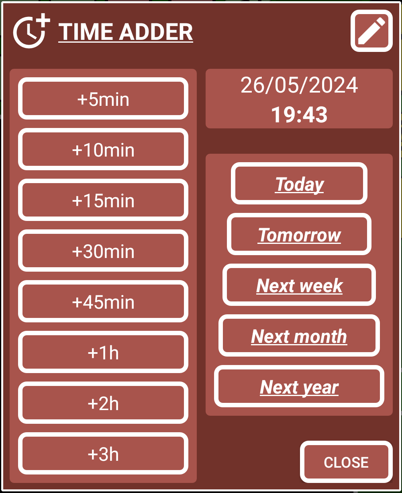

How to create an alarm/reminder (blue record)
Let’s create a simple alarm/reminder for something we need to do in the future.1. Open SECURElogBook and go to the main window, blue one:

2. Press the button (I), to add a new record/task.
3. Once the creator window (green background) is opened we were able to create our record/task.

The small list with all the records (K) will show only records that match or follow the moment selected by time and date (D and F).
4. By default, the record time is set to the present and the task is set as not completed. That is the reason why the record buttons (H, I, J) are yellow.
5. Add the text inside the text box. If you save a record/task with no text, the program will add “NO TEXT” by default.
6. Setup the time. In SECURElogBook you can add time manually or you can use windows. The text boxes (D) are used to add hours (left) and minutes (right). If you want to use the windows:
Press button (E) to add fixed time values:

You can customize the values on the left if you press the pencil button on the top right.
Every time you press a button on the left column, the value will be added.
The buttons on the right column, will not add time every time you press them.
Hold button (E) to add not fixed values:

This window will allow to add any time value, even negative values.
You can press button (C) to set the record with the current time.
7. Select the date by pressing on the date button (F).

To remove a year from the current one, press the left arrow. To add a year, press the right arrow. To enter a year value, press the down arrow.
Every time the date or time changes a message will let you know the time between the present and the new set time. The background colour of that message will help you to double check what you doing:
Black = past.
Red = today.
Blue = tomorrow.
Green = beyond the day after tomorrow.
Also, the background colour of the date will blink if you change the date.
8. Because we are setting an alarm/reminder, the time for the record must be set in the future. When we set our record to a moment in the future, the record buttons (H, I, J) will turn blue to indicate the record is set in the future.
Records in the future (blue) are the only ones with an alarm.
The record buttons (H, I, J) will change depending on if a record is set in the future or the past. But also, if the record is completed or not.
. Past:
Completed
. Future:
Completed
The color-coded system will give you information visually, making things easier:
. Dark = Completed records.
. Yellow = Missing records, that you must review as soon as possible.
. Blue = Future records.
The colour of the record buttons (H, I, J) is like a preview of how the record we are creating will look like.
9. Now that we have a blue record with an alarm, we can save it by pressing the button (H).
10. If the records buttons turn red, is because there is already a record set with that date and time. That means you cannot save your record there. This record with the same time, will be the first one in the list or records.
11. Save the record by pressing the button H. You will see a confirmation message with a red, blue or green background:
. Black = past.
. Red = today.
. Blue = tomorrow.
. Green = beyond the day after tomorrow.
EXAMPLE OF POSSIBLE ERROR: if you created an alarm record but the confirmation message was black you have a problem. Because you created an “alarm” in the past, so it will have no alarm. You can always press the button (G) on the main window to open the last saved record to fix the problem.
Congratulations you just created your first alarm/reminder.